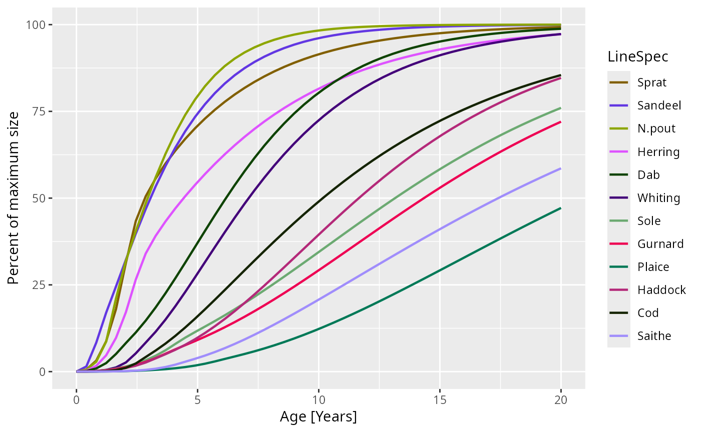
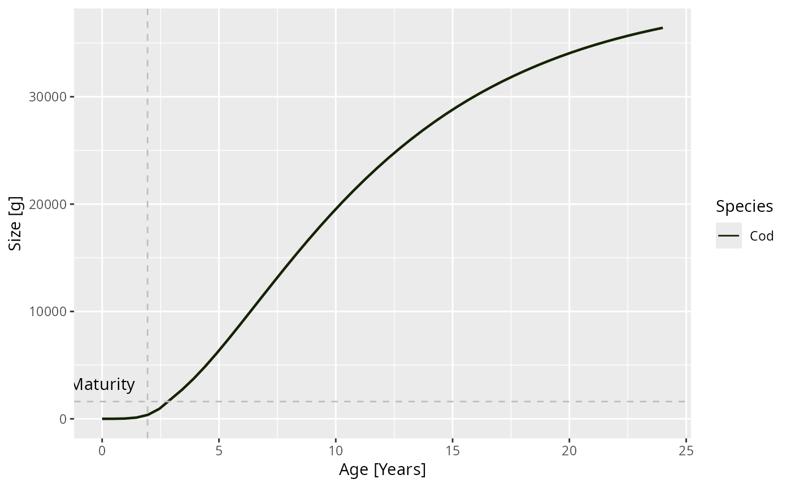
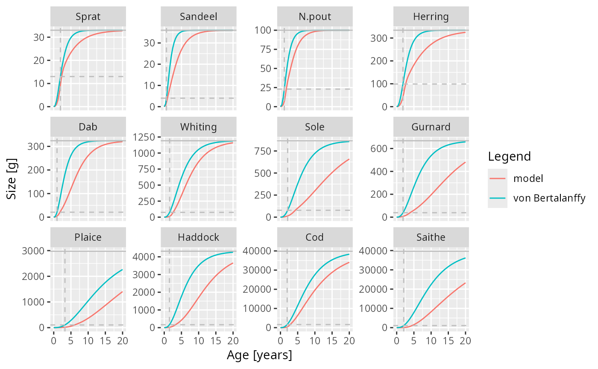

The growth curves represent the average age of all the living fish of a species as a function of their size. So it would be natural to plot size on the x-axis. But to follow the usual convention from age-based models, we plot size on the y-axis and age on the x-axis.
Usage
plotGrowthCurves(
object,
species = NULL,
max_age = 20,
percentage = FALSE,
species_panel = FALSE,
highlight = NULL,
size_at_age = NULL,
return_data = FALSE,
log_x = FALSE,
log_y = FALSE,
log = NULL,
...
)Arguments
- object
An object of class MizerSim or MizerParams.
- species
The species to be selected. Optional. By default all target species are selected. A vector of species names, or a numeric vector with the species indices, or a logical vector indicating for each species whether it is to be selected (TRUE) or not.
- max_age
The age up to which to run the growth curve. Default is 20.
- percentage
Boolean value. If TRUE, the size is given as a percentage of the maximal size.
- species_panel
If TRUE (default), and
percentage = FALSE, display all species as facets. Otherwise puts all species into a single panel.- highlight
Name or vector of names of the species to be highlighted.
- size_at_age
A data frame with observed size at age data to be plotted on top of growth curve graphs. Should contain columns
species(species name as used in the model),age(in years) and eitherweight(in grams) orlength(in cm). If bothweightandlengthare provided, onlyweightis used.- return_data
A boolean value that determines whether the formatted data used for the plot is returned instead of the plot itself. Default is FALSE.
- log_x
If
TRUE, use a log10 x-axis. Default isFALSE.- log_y
If
TRUE, use a log10 y-axis. Default isFALSE.- log
Character string specifying which axes should use log10 scales, in the same form as the base
plot()argument. For example,"x","y","xy"or"". If supplied, this overrideslog_xandlog_y.- ...
Unused.
Details
In each panel for a single species, a horizontal line is included that indicate the maturity size of the species and a vertical line indicating its maturity age.
If size at age data is passed via the size_at_age argument, this is plotted
on top of the growth curve. When comparing this to the growth curves, you
need to remember that the growth curves should only represent the average
age at each size. So a scatter in the x-direction around the curve is to be
expected.
For legacy reasons, if the species parameters contain the variables a and
b for length to weight conversion and the von Bertalanffy parameter k_vb,
w_inf (and optionally t0), then the von Bertalanffy growth curve is
superimposed in black. This was implemented before we understood that the von
Bertalanffy curves (which approximates the average length at each age) should
not be compared to the mizer growth curves (which approximate the average age
at each length).
See also
Other plotting functions:
addPlot(),
animate.ArrayTimeBySpeciesBySize(),
plot,
plot2(),
plotBiomass(),
plotCDF(),
plotCDF2(),
plotDiet(),
plotFMort(),
plotFeedingLevel(),
plotMizerParams,
plotMizerSim,
plotPredMort(),
plotRelative(),
plotSpectra(),
plotSpectra2(),
plotSpectraRelative(),
plotYield(),
plotYieldGear(),
plotting_functions
Examples
# \donttest{
params <- NS_params
sim <- project(params, effort=1, t_max=20, t_save = 2, progress_bar = FALSE)
plotGrowthCurves(sim, percentage = TRUE)

plotGrowthCurves(sim, species = "Cod", max_age = 24)

plotGrowthCurves(sim, species_panel = TRUE)

# Returning the data frame
fr <- plotGrowthCurves(sim, return_data = TRUE)
str(fr)
#> 'data.frame': 600 obs. of 4 variables:
#> $ Species : Factor w/ 12 levels "Sprat","Sandeel",..: 1 2 3 4 5 6 7 8 9 10 ...
#> $ Age : num 0 0 0 0 0 0 0 0 0 0 ...
#> $ Size [g]: num 0.001 0.001 0.001 0.001 0.001 0.001 0.001 0.001 0.001 0.001 ...
#> $ Legend : chr "model" "model" "model" "model" ...
# }